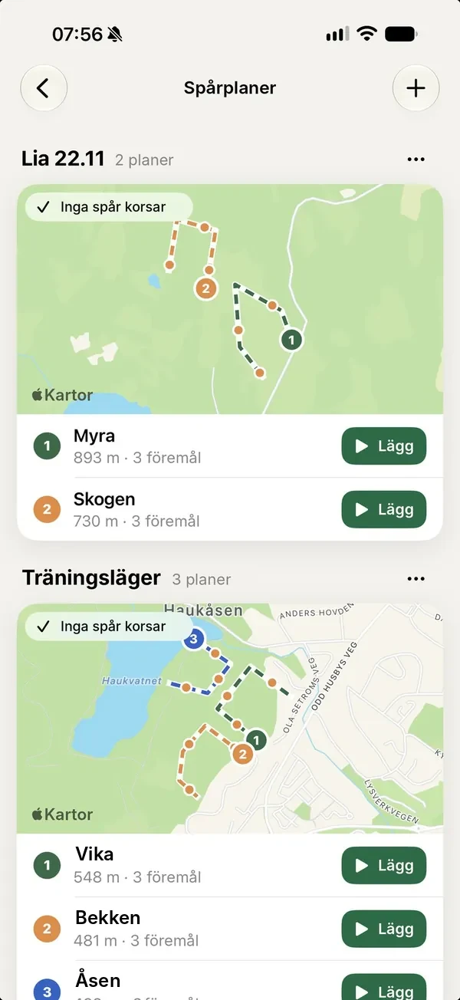
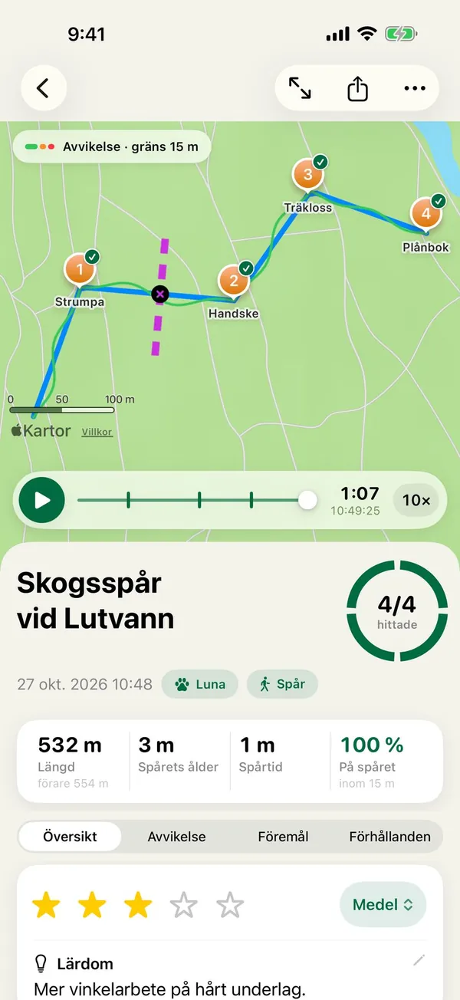

Nyheter i Trax
Uppdateringarna är gratis för alla som har appen.
Version 2.6: Spårplaner
November 2026 · iPhone
Planera spåren på kartan hemma och lägg dem efter planen ute i terrängen.
- Rita spåret på kartanTryck in sträckor och föremål och se längden på varje sträcka och hela spåret.
- Grupper för träningsdagenSamla spåren för samma dag och område på en karta och se direkt om några korsar eller ligger för nära varandra.
- Lägg spår efter planenPlanen visas streckad på kartan medan du lägger spåret, med de andra spåren i gruppen svagt runt omkring.
- Dela med spårläggarenSkicka planen till den som ska lägga spåret, så hamnar den direkt i Trax. Eller dela den som GPX.


Version 2.5: Ny spårdetalj och hundsidan
Oktober 2026 · iPhone och Android
En ny spårdetalj och en egen sida för varje hund.
- Ny spårdetaljStor karta överst med uppspelning och flikar för Översikt, Avvikelse, Föremål och Förhållanden. En ny graf visar avvikelsen längs spåret.
- HundsidanTryck på tassen på startskärmen och se nyckeltal, mål, träningsmoment och utvecklingen för varje hund.
- ”Korsar här” på IGP-spårTryck där störspåret ska korsa, så räknas korsningen i IGP-kravet och du får en avisering när hunden spårar förbi.
- Markering i sökLigg, sitt, stå, apport eller förbi på föremålssök, och passiv markering, bringsel eller skall på ytsök.
- Rätta fynd efteråtTryck på ett föremål i ett sparat spår och välj Hittat eller Inte hittat.
- Ortnamn och skalaSpår utan eget namn får ortnamn och datum, och kartorna har fått skala.
Väntande spår ser nu ut som färdiga spår, IGP-mallen vänds och rutan i sök formas med ett tryck och drag, och IGP-kravet för FH 2 och FH 3 räknar nu korsningar rätt. ”Importera spår” och användarmanualen finns nu under Inställningar.
